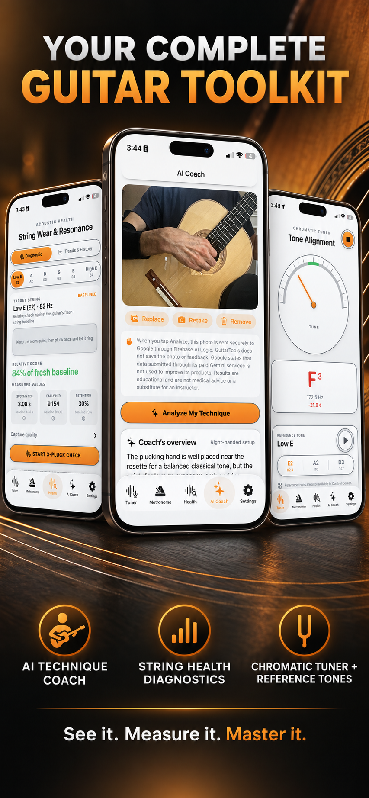
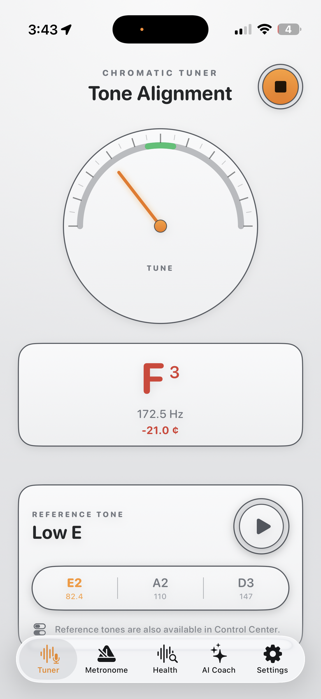
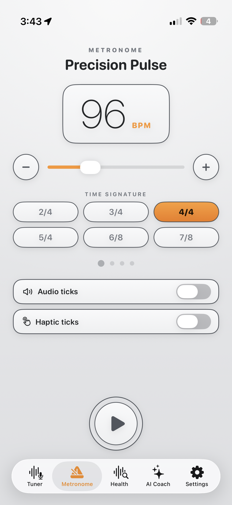
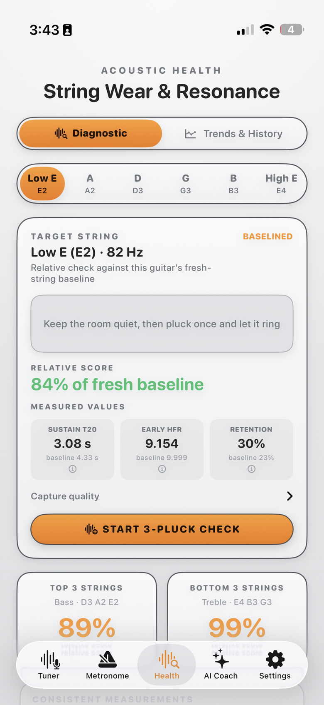
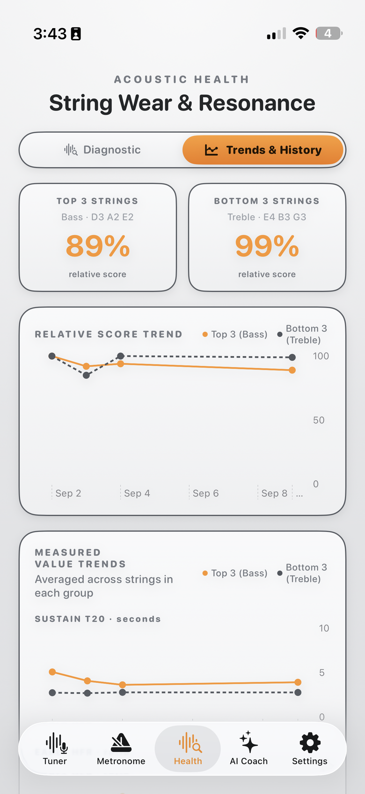
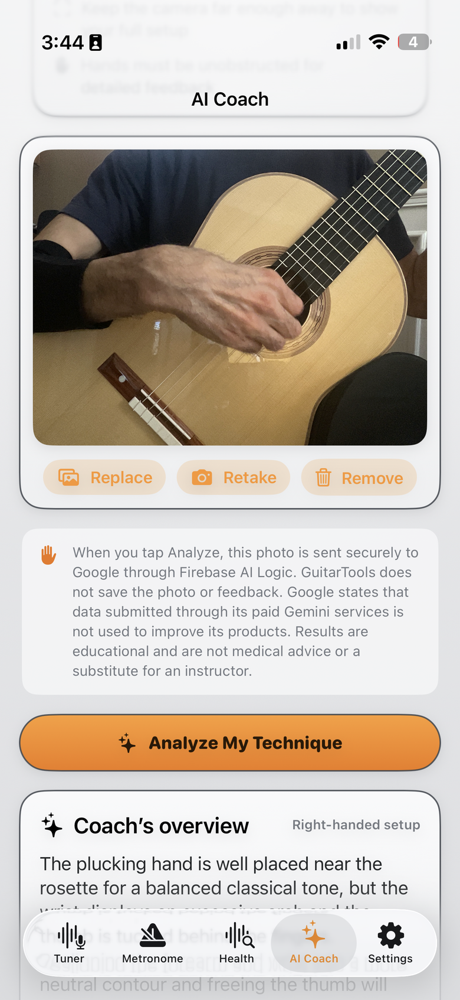
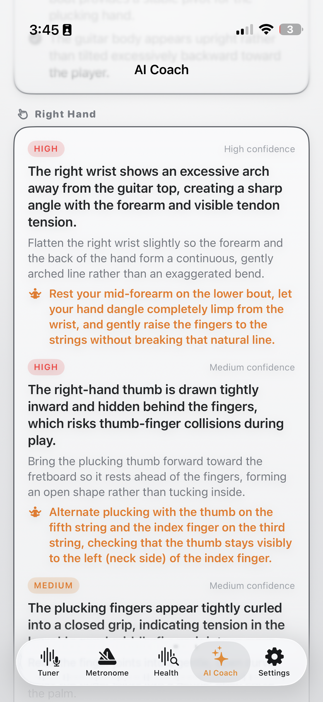
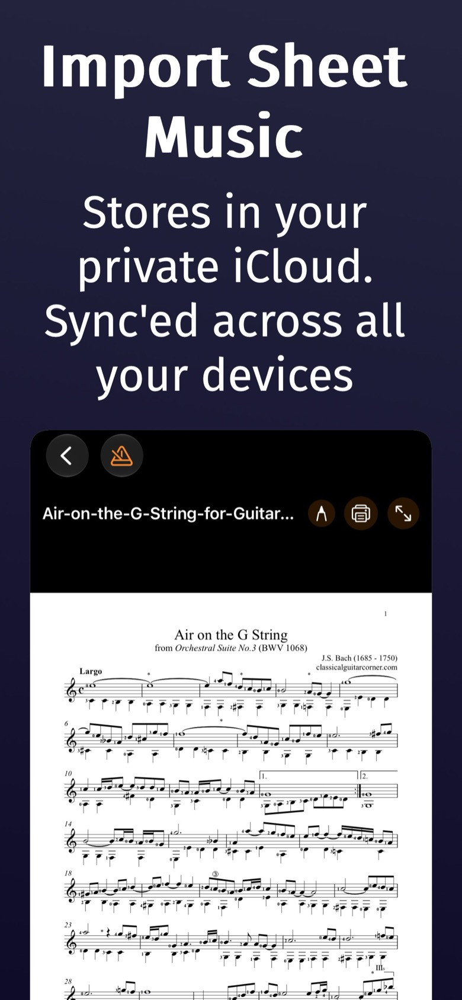
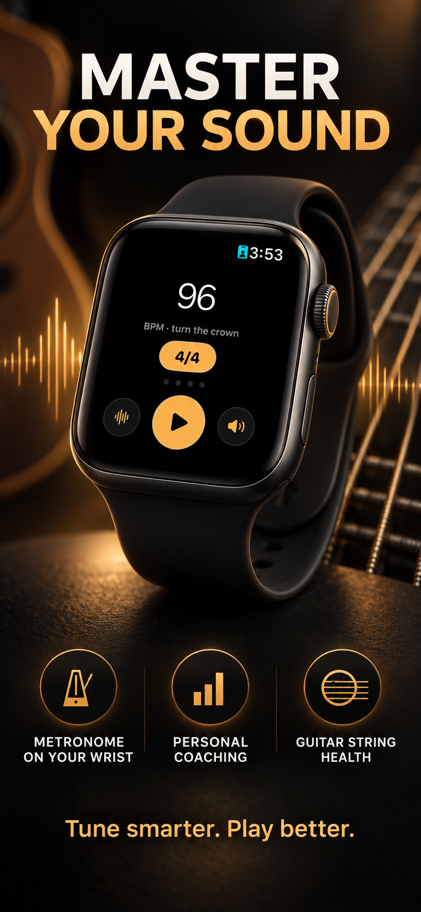

Tune with precision, keep time with confidence, measure the health of every string, keep your scores in one place, and let an AI coach refine your technique — all in one beautifully crafted app for iPhone and Apple Watch.
See it. Measure it. Master it. · Free to download

From the first pluck to the final page, GuitarTools covers the fundamentals — and the fine details.
Fast, accurate tuning with tone alignment and one-tap reference tones from low E to high E. Play the E-string tone straight from Control Center or with Siri.
A metronome that feels like an instrument: audio and haptic ticks, every time signature from 2/4 to 7/8, and crown-controlled tempo on your wrist.
Pluck three times and see how each string measures against its own fresh-string baseline — sustain, early high-frequency response, and retention, with trends over time.
Snap a photo of your playing position and get severity-rated feedback on posture, wrists, and hands — with exercises you can try on the spot.
Import your scores as PDFs from Files or any app with the share sheet, and they sync to your private iCloud. Read in a dark, music-stand-friendly view, annotate directly on the page, and pick up right where you left off.
Clean, glanceable screens built for music stands, dim stages, and busy hands.

Tone alignment and reference tones at a glance.

Every time signature, with audio or haptic ticks.

Pluck once and let it ring. See how each string measures against its baseline.

Watch resonance fade over time, so you restring at the right moment.

Snap a photo and get an overview of your posture and hand positions.

Severity-rated advice with exercises you can try right now.
Bring your PDF scores into GuitarTools from Files or any app with the share sheet. Your library syncs to your private iCloud, pages turn with a tap, and your place is remembered — even mid-phrase.


Keep the beat without reaching for your phone. GuitarTools for Apple Watch puts a full metronome where you can always see — and feel — it.
Questions, feedback, or a feature you'd love to see — we answer every message personally.